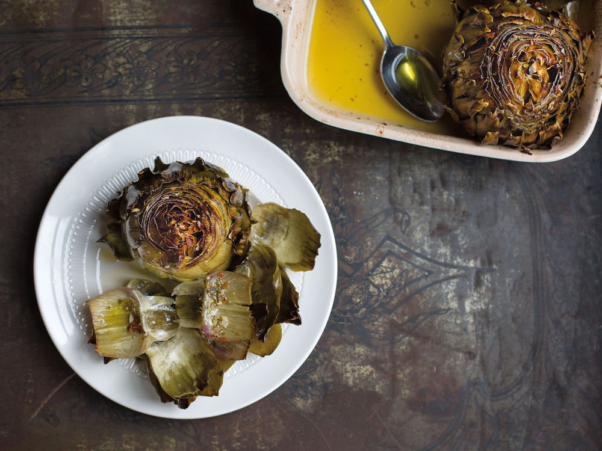

Recipe !

ROASTED ARTICHOKES
ROASTED ARTICHOKES
MAY 13, 2016
Though traditionally cooked in embers, these artichokes are equally as succulent when oven-roasted.
Read More
CARCIOFI ALLA ROMANA
MAY 13, 2016
This classic Roman contorno, or side dish, calls for mint, a popular herb in Roman kitchens. We featured this recipe, along with ones for other delicious contorni, in "Eternal City," Anya von Bremzen's ode to Rome.
Read More